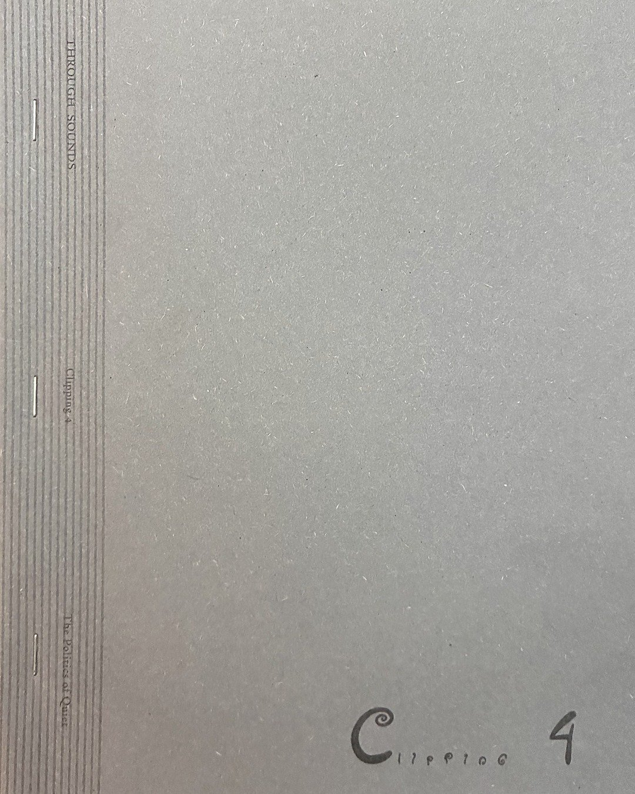
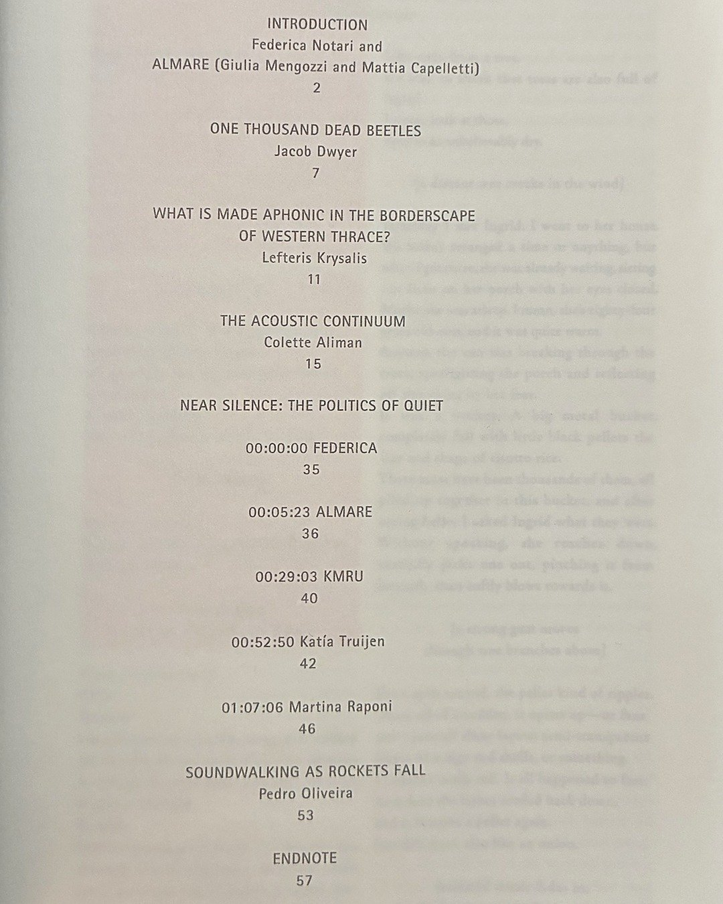
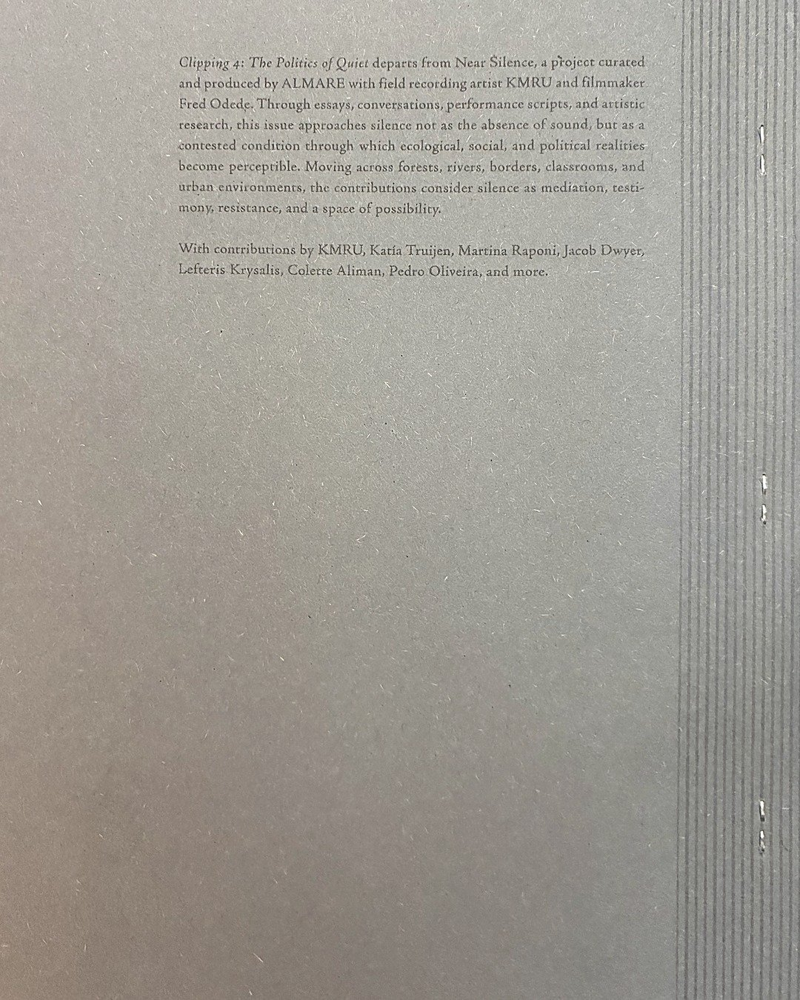

“Lefteris Krysalis’ essay recounts the borderscape in Western Thrace through sound. Drawing on artistic research and fieldwork, he reflects on the multiple affordances of silence as an aesthetic-political condition of resistance: a concealment tactic deployed by migrants in border-crossing and conversely a form of discursive suppression of state and EU sanctioned violence and securitarian border making.”
— Federica Notari, introduction to Clipping 4: The Politics of Quiet
What Is Made Aphonic in the Borderscape of Western Thrace?
Het Nieuwe Instituut, 2026



To fill in: Link to the publication